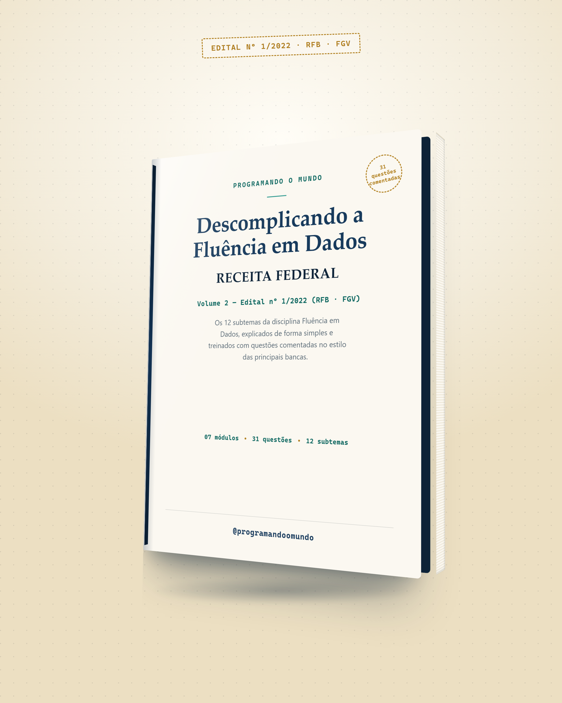

As questões de Fluência em Dados que a FGV já cobrou — e vai cobrar de novo
Volume 2 da série Descomplicando o TI para Concursos: os 12 subtemas oficiais do Anexo I, explicados sem enrolação e treinados com 31 questões comentadas no estilo Cebraspe e FGV.

Fluência em Dados não é um recorte genérico de "tecnologia"
É conteúdo programático oficial, item por item do Anexo I — com peso relevante dentro do bloco de Conhecimentos Básicos: 10 questões para Auditor-Fiscal e 15 para Analista-Tributário, só nesse tema. Quem estuda "TI genérico" chega na prova sem ter visto metade do que cai.
Sem complicação
Cada subtema explicado de forma direta, com analogias do dia a dia — nada de definição de dicionário sem contexto.
O que mais cai na prova
Lista rápida, por módulo, dos pontos que Cebraspe e FGV mais exploram — o resumo que você revisa na véspera.
Questões comentadas
3 questões por módulo, Certo/Errado e múltipla escolha, cada uma com gabarito e o raciocínio explicado.
Item por item do Anexo I — nenhum subtema de fora
Cada módulo segue a mesma estrutura: conceito, pegadinhas de prova e questões comentadas.
Fundamentos de Dados
Dado → informação → conhecimento, atributos qualitativos/quantitativos, métrica x KPI e o fluxo ETL.
3 questões comentadasAnálise e Tendências
Os 4 tipos de Analytics, clustering como aprendizado não supervisionado, tendência x projeção.
3 questões comentadasIA na Prática
Hierarquia IA ⊃ Machine Learning ⊃ Deep Learning, os três tipos de aprendizado e PLN.
3 questões comentadasGovernança de Dados
Modelos centralizado, compartilhado e colegiado — quem decide o quê, e com que padrão.
3 questões comentadasCiência de Dados
Ciclo de vida do projeto e os papéis: Data Engineer, Data Analyst e Data Scientist.
3 questões comentadasBig Data e Nuvem
Os 5 Vs, arquitetura em camadas, IaaS/PaaS/SaaS e nuvem pública, privada e híbrida.
3 questões comentadasFerramentas: Linguagens e NoSQL
Python x R, os 4 tipos de banco NoSQL e a diferença entre Hadoop e Spark.
3 questões comentadasÉ este o formato — teste antes de levar
Duas questões reais do ebook, uma de cada módulo. Toque para revelar o gabarito comentado, exatamente como aparece no PDF.
Módulo 1 · Questão 1 · estilo Cebraspe
Um atributo qualitativo ordinal é aquele que representa categorias sem nenhuma ordem ou hierarquia entre elas, como a cor dos olhos de uma pessoa.
Essa descrição corresponde ao atributo qualitativo nominal. O ordinal, ao contrário, tem uma ordem natural entre as categorias — como nível de escolaridade ou classificação de risco.
Extra · Questão 1 · estilo FGV · nível avançado
Qual cláusula SQL deve ser usada para filtrar grupos já formados por um GROUP BY, diferente do WHERE, que filtra linhas individuais antes do agrupamento?
- a) WHERE
- b) HAVING
- c) ORDER BY
- d) DISTINCT
- e) LIMIT
WHERE filtra linhas antes de agrupar; HAVING filtra os grupos já formados pelo GROUP BY, com base em uma condição sobre valores agregados. Tema que já apareceu em prova real da FGV para a Receita Federal.
10 questões extras, no nível que a FGV realmente aplicou em 2023
A prova de 2023 cobrou até assunto fora da redação literal do edital — SQL e bancos relacionais — e não foi rasa: redes neurais, k-NN, leitura de código Python. Estas 10 questões extras foram calibradas nesse mesmo padrão, 100% no formato real da banca.
Antes de garantir o seu
Esse ebook segue o edital oficial?
Sim. É o conteúdo programático de Fluência em Dados exatamente como aparece no Anexo I do Edital nº 1/2022 (RFB, banca FGV) — item por item, sem recorte genérico de tecnologia.
As questões são da prova oficial já aplicada?
Não. Foram elaboradas originalmente, no estilo e no nível das principais bancas de concurso, para fins de treino e fixação — não são reproduções de provas já aplicadas.
Preciso ter o Volume 1 antes deste?
Não é obrigatório. Mas os módulos 4 (Banco de Dados) e 9 (Estrutura de Dados) do Volume 1 são uma base complementar útil, principalmente para os módulos 6 e 7 deste volume.
Serve para Auditor-Fiscal e para Analista-Tributário?
Sim. Os 12 subtemas cobrados são comuns aos dois cargos — o que muda é apenas o número de questões do tema na prova (10 e 15, respectivamente).
Em que formato eu recebo?
PDF digital, com acesso imediato após a confirmação — mesmo formato usado nas capturas de tela desta página.
Descomplicando a Fluência em Dados — Receita Federal
- 7 módulos, cada um com conceito, pegadinhas de prova e questões comentadas
- 31 questões com gabarito e comentário — estilo Cebraspe (Certo/Errado) e FGV (múltipla escolha)
- 10 questões extras nível avançado: SQL, k-NN, redes neurais, leitura de código Python
- Glossário rápido para revisão de véspera
- PDF digital, acesso imediato